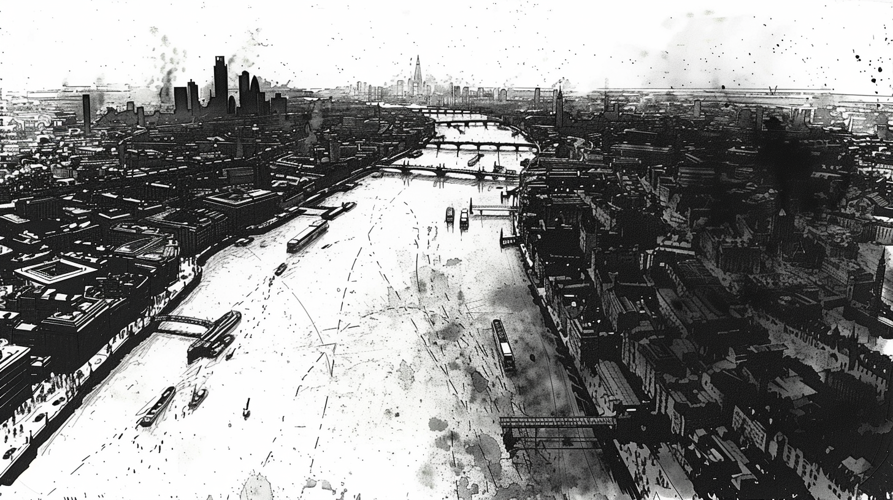

159-H00-C — NHS Emergency Alert · two copies — pass them down the table
⚠️
EMERGENCY ALERT
UK Government
STAY INDOORS. AVOID ALL CONTACT WITH PERSONS WHO APPEAR CONFUSED OR AGGRESSIVE. EMERGENCY SERVICES ARE RESPONDING. THIS IS NOT A TEST.
Sunday 17 May · 10:47
OK
⚠️
EMERGENCY ALERT
UK Government
STAY INDOORS. AVOID ALL CONTACT WITH PERSONS WHO APPEAR CONFUSED OR AGGRESSIVE. EMERGENCY SERVICES ARE RESPONDING. THIS IS NOT A TEST.
Sunday 17 May · 10:47
OK
✂ GM read-aloud
IF ANYONE DIALS 999
Three rings. Then:
"All lines are currently experiencing extremely high demand. If you are in immediate life-threatening danger, please stay on the line."
Hold music. A recorded message asks callers not to ring unless in immediate danger.
The line drops.
Play the real alert tone from your phone as you hand these over — the shock of recognition is the opening of the scenario.
159-H01-B — Callum's pocket notebook · slip 1 hands out with Clue 2, slip 2 is the Act Two hinge
✂ slip 1 — Act One
Metropolitan PolicePocket Note Book · PC 4402 FRASER
Sun 17/05 — radio partial, logged best I could —
"…all units… first reports… Elephant… zero seven fourteen…"
07:14?? Alert didn't go till 10:47. Query control — no answer.
That's three and a half hours. Who knew?
✂ slip 2 — Act Two (the cordon)
Metropolitan PolicePocket Note Book · PC 4402 FRASER
16:40 approx — clear transmission, all-channels:
"ALL UNITS — HOLD THE NORTH BANK LINE — DO NOT CROSS — REPEAT — DO NOT CROSS."
They're staging to come south
They're not coming.
Hand slip 2 over in silence after playing Callum's reaction. His face first, then the paper.
159-H02-B — Priya's phone · give to Priya's player only, when she checks her messages
Ed Whitfield — Editormobile · Messages
Saturday 21:47
Something came in. Might be relevant. Can we talk Monday?21:47
Sunday
Priya are you seeing this alert10:49
The thing that came in. Thursday. A whistleblower package — Meridian Biosciences, their London site. Lab safety documentation. Legal wouldn't clear it for the weekend and I sat on it.10:53
If this is what I think it is I sat on it for two days.10:54
Call me. Please.10:56
Delivered · Sunday 10:56 — no messages since
Clue 9. Let her sit with it — "I think I know what this is" is a character beat, not an information dump. Whether she shares it is the player's choice.
159-H00-B — South Bank area map · one per table, face-up from the start
Waterloo to Tower Bridge. Start positions marked K·D·M·O·P·T; escape routes Ⓐ (Tower Bridge on foot) and Ⓑ (the RIB at Bankside Pier).
159-H02-A — Marcus's stream, drone still · show when the group watches his feed (Clue 6)
● LIVE@marcus_everything_live41,207 watching

viewer drone clip · central LondonREPOSTED TO STREAM
The aerial view of London. It is much worse than they expected — city-wide, both banks, crowds compressing onto the bridges heading north.
Scene plates 1/2 — show, don't describe
159-H02-C — The Blue Anchor. Twelve survivors. Danny in the corner, jacket over his arm.
159-H03-A — Tower Bridge approach, last light. Pete at the gatehouse.
Scene plates 2/2
159-H03-B — Bankside Pier. The RIB, and the dark arch mouth behind it.
159-ART-10 — One figure standing completely still. Nothing obviously wrong, until you look.